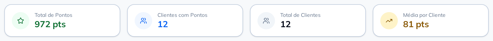
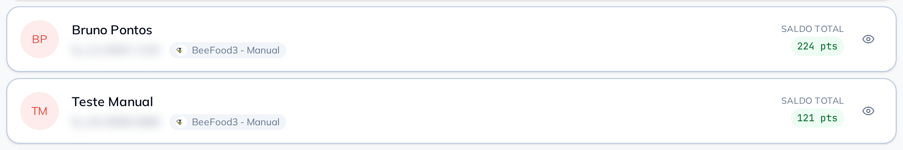

O painel abre com o total de pontos vivos, quantos clientes têm saldo e a média de cada um — o tamanho do que a sua loja já prometeu em recompensa. Na linha de cada pessoa você abre o extrato dela e credita pontos de cortesia na hora, com um motivo que ela lê inteiro no celular.

